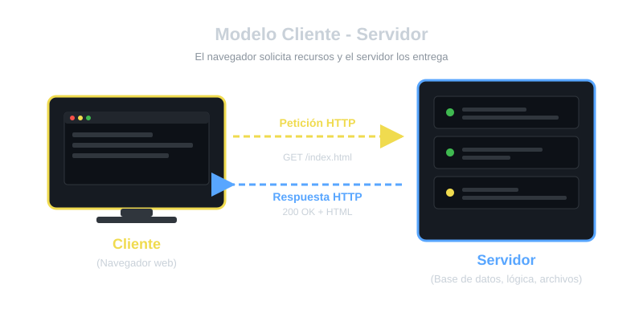
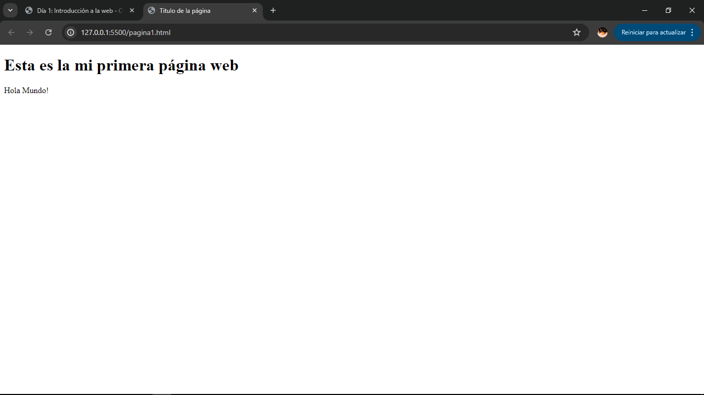

📌 Objetivos del día
- Entender cómo funciona Internet (modelo cliente - servidor)
- Conocer que es HTTP y HTTPS
- Aprender la estructura básica de un documento HTML
- Escribir tu primera pagina web
📖 Contenido
Entender cómo funciona Internet es clave, porque tu código no vive aislado: se ejecuta dentro de un sistema comunicación global. La idea fundamental es que Internet es la infraestructura de red (cables, routers, protocolos), mientras que la Web es un servicio que corre sobre esa infraestructura (páginas, sitios, aplicaciones).
1. ¿Cómo funciona Internet?
Cuando escribes una dirección en el navegador (por ejemplo www.ejemplo.com), tu equipo actua como cliente
y envía una petición a un servidor. El servidor responde con los archivos necesarios (HTML, CSS, Javascript, imagenes, etc.)
y el navegador los interpreta para mostrar la página.
Este intercambio se realiza mediante el protocolo HTTP (o HTTPS cuando está cifrado). Es el lenguaje común que permite que cliente y servidor se entiendan.
Para encontrar un servidor a partir del nombre como http://google.com,
el navegador consulta el DNS, que traduce ese nombre a una
dirección IP
2. Módelo cliente-servidor
Es una arquitectura de red donde las tareas se reparten entre proveedores de recursos o servicios(servidores) y solicitantes de los mismos (clientes). Es el modelo fundamental sobre el que funciona internet.
Cliente
Es el programa que inicia la comunicación y solicita un servicio.
Ejemplos de estos pueden ser:
- Un navegador(Chrome, Firefox, Safari, etc.)
- Una app móvil
- Un cliente de correo
Como caracteristicas principales se encrga de iniciar peticiones, espera respuesta, no comparte sus recursos directamente, suelen ser multiples (muchos clientes a la vez).
Servidor
Es el programa que escucha, procesa peticiones y entrega respuestas.
Ejemplos de servidores pueden ser:
- los servidores web (Apache, Nginx)
- servidores de bases de datos
- servidores de correo
Estos tienen como caracteristica que estan siempre en espera, ofrecen recursos/servicios, atienden a muchos clientes, suelen tener IP y puerto fijo.

Funcionamiento del ciclo básico
- El cliente envía una petición (request) al servidor
- El servidor recibe, prosesa y busca el recurso solicitado
- El servidor devuelve una respuesta (respose) al cliente
- El cliente interpreta y muestra el resultado
Ejemplo de visitar una web
- Escribes
www.ejemplo.comen el navegador. - El navegador(cliente) resuelve el dominio vía DNS y obtiene la dirección IP del servidor.
- Envía la peticiión HTTP:
GET /index.html. - El servidorweb recibe la peticiión, localiza el archivo y responde con el contenido + código de estado(ej:
200 OK. - El navegador recibe y renderiza la página.
Ventajas del módelo
- Centralización del control: los datos y la seguridad se gestionan en el servidor.
- Escalabilidad: se pueden añadir más clientes o más servidores según la demanda.
- Mantenimiento sencillo: se actualiza el servidor sin tocar los clientes.
- Seguridad: el cliente no accede directamente a los datos; todo pasa por el servidor.
Desventajas/retos
- Punto único de falllo: si el seervidor cae, los clientes no pueden acceder.
- Cuello de botella: muchas peticiones simultáneas pueden saturar al servidor.
- Dependencia de la red: requiere conectividad constante.
3. ¿Qué es HTML?
HTML (HyperText Markup Language) es el lenguaje de marcado que da estructura al contenido de una página web. No es un lenguaje de programación: es un conjunto de etiquetas que indican al navegador que es cada cosa (un título, un párrafo, una imagen...).
3. Estructura básica de un documento HTML
Las instrucciones están encerradas entre los caracteres: < y >.
Muchos elementos HTML requieren una marca de comienzo y otra de finalización. Todo aquello que está fuera de las marcas del lenguaje se imprime en la pantalla (dentro del navegador).
Todo documento HTML sige esta estructura mínima.
<!DOTYPE html>
<html lang ="es">
<head>
<meta charset="UTF-8">
<title>Titulo de la página</title>
</head>
<body>
Estructura de la página
</body>
</html>
Una página HTML es un archivo que generalmente tiene como extensión los caracteres html. Por ejemplo podemos llamar a nuestra primer página con el nombre: pagina1.html
Para segir este curso se recomienda instalar un editor de texto como Visial Studio Code(VSCode) o Notepad++
Escribe el código y guardalo con un nombre como pagina1.html y haz doble click sobre el para que se abra en el navegador.
Explicación:
<!DOTYPE html>: Indica que el documento es HTML5<html>: raíz del documento.lang ="es"indica el idioma.<head>: contiene metadatos (no se ve en la página).<meta charset="UTF-8">: asegura que los caracteres especiales se vean bien.<title>: titulo de la página, aparece en la pestaña del navegador.<body>: todo el contenidi visible de la página.
Ejemplo práctico
<!DOTYPE html>
<html lang ="es">
<head>
<meta charset="UTF-8">
<title>Titulo de la página</title>
</head>
<body>
<h1>Hola Mundo!</h1>
<p>Hola Mundo!</p>
</body>
</html>
Crea un archivo pagina1.html y copia el contenido.
Ábrelo en el navegador haciendo doble click sobre el. Déverias ver el titulo y el párrafo.

✍ Ejercicios
Modifica el ejemplo anterior para que incluya:
- Un título
<h1>con tu nombre. - Un párrafo
<p>contando por que quieres aprender desarrollo web. - Un segundo título
<h2>con la palabra "Objetivos". - Una lista
<ul>con al menos tres objetivos personales.
📌 Resumen
- Internet funciona con un modelo cliente-servidor.
- HTTP/HTTPS es el protocolo de comunicación.
- HTML da la estructura del contenido.
- Todo documento tiene <head> y <body>
🚀 Progreso del roadmap
Cuando termines esta lección márcala como completada. Se reflejará automáticamente en el Roadmap de 180 días